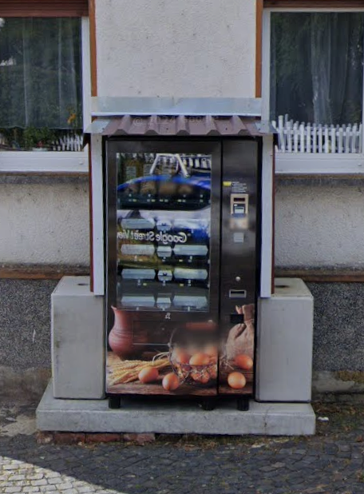

{% assign data = site.data.lebensmittel %}

{% include hero.html hero=data.hero %}

{% include cards.html cards=data.cards %}

<div class="cu-section">
    <div class="container" id="automat">
        <div class="row row-cols-1 row-cols-md-2 g-4 align-items-center">
            <div class="col pe-md-5">
                <h2 class="cu-section-title">Unser Automat</h2>
                <p class="cu-section-subtitle">Frische Lebensmittel flexibel und bequem kaufen</p>
                <p><i class="fa-solid fa-clock me-2"></i>Durchgehend geöffnet</p>
                <p><i class="fa-solid fa-credit-card me-2"></i>Nur Kartenzahlung möglich</p>
                <p><i class="fa-solid fa-box-open me-2"></i>Lebensmittel werden regelmäßig aufgefüllt</p>
                <p>Unser Automat befindet sich in der <b>Klosterstraße 7 in Ahlbach</b>, an der Ecke zum Urselthaler
                    Weg.
                    Er steht gut sichtbar direkt am Straßenrand. Klicke auf den Button, um die Route in Google Maps zu
                    laden.</p>
                <a class="btn btn-primary" href="https://maps.app.goo.gl/wWjbUrZ9FfEwBjNN9" target="_blank">
                    Google Maps öffnen
                    <i class="fa-solid fa-arrow-up-right-from-square"></i>
                </a>
            </div>
            <div class="col">
                
            </div>
        </div>
    </div>
</div>